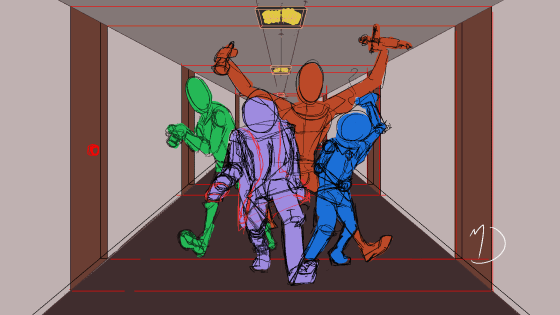
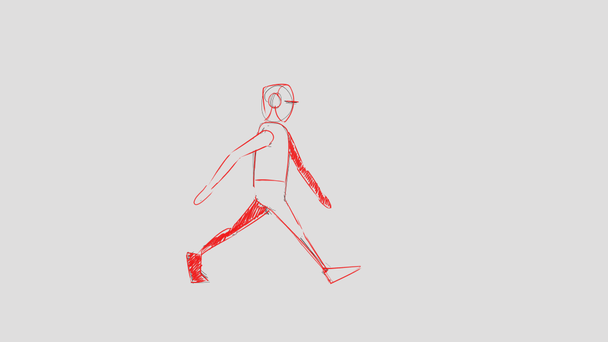

Ugyan már gyerekkoromban is nagyon érdeklődtem a rajzolás és az animációkészítés iránt (rajzfilmeken nőttem fel), csak pár éve kezdtem el komolyabban foglalkozni vele. Elkezdtem saját történetet írni és karaktereket rajzolni hozzá; nagy álmom, hogy elindíthassak egy saját képregénysorozatot.
Rajzolás


A fenti képeken a történetem főhősei láthatóak
Karakter animációkkal még nem foglalkoztam sokat, előbb szeretnék eljutni arra a szintre, hogy már magabiztosan tudok karaktereket rajzolni különböző szemszögekből;
az alábbi animációk ugyan csak sketch fázisban vannak, de könnyen kivehető milyen mozdulatokat ábrázolnak:


Kezdetben sokaknak frusztráló lehet, ha nem éppen úgy sikerül a rajzuk, mint ahogyan azt fejben elképzelik. Ennek igazából az a borzasztóan egyszerű oka van, hogy sajnos mivel a képzelőerőnk határtalan, ezért a tényleges készségeink nem mindig érnek fel az elvárt szinttel. Aki komolyan szeretne megtanulni rajzolni, rengeteg időre és még több türelemre lesz szüksége, de egyáltalán nem lehetetlen; bárki megtanulhat rajzolni, manapság még könnyebb is, elvégre sok tutorial videó és artist közösség létezik, mind nagyon segítőkészek és mindenki számára könnyen elérhetőek.
Én személy szerint azért is szeretek rajzolni, mert a hangulatomtól függetlenül meg tud nyugtatni, képes lekötni és szórakoztatni. Mindenkinek ajánlani tudom mint hobbit, nagyon lebilincselő és érdekes tevékenység papírra, illetve képernyőre vinni vizuálisan az elképzeléseinket.